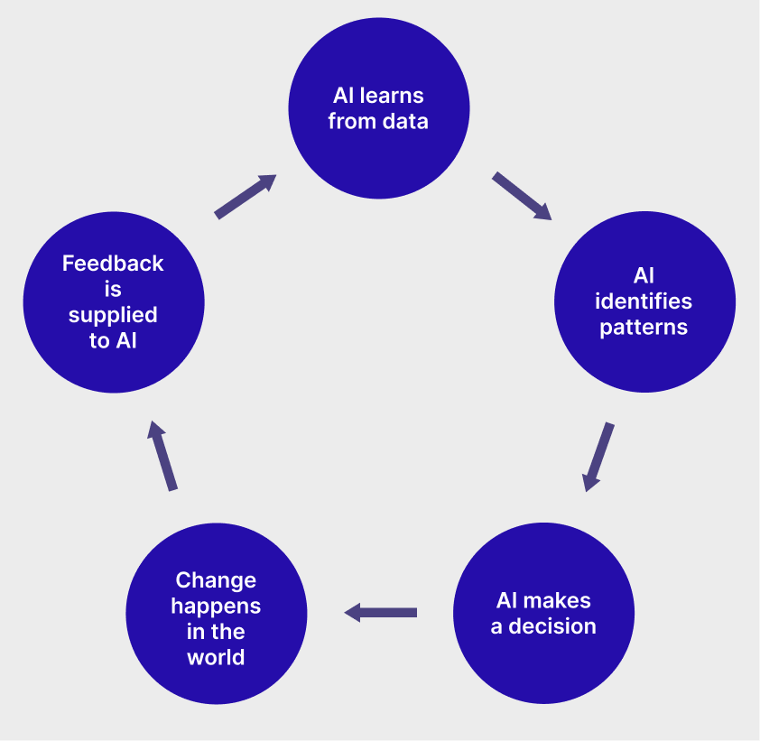

AI-enabled recruitment: A review
Academic research | 5 minute read

Image source: Claudenakagawa | Istock | Getty Images
Introduction
Recent years have seen a rise in artificial intelligence (AI) use in the job candidate recruitment and screening process—as of 2023, an estimated 35-45% of companies use AI in the hiring process, including 99% of all Fortune 500 companies. These systems, which can be classified as Algorithmic Decision Support Systems (or ADSSs, for short) are intended to drastically reduce candidate screening time and ostensibly eradicate the potential for human recruiter bias with programmatic “objectivity.” However, AI applications are notably only as objective as the data sets they learn from.
The Feedback Loop
In 2015, Amazon ditched its proprietary AI-powered Applicant Tracking System (AI-ATS) after discovering its habit of deprioritizing women's resumes for tech positions. This is a potential problem with all closed-circuit ADSSs: the system is trained on bad data, then makes decisions that reinforce its training, thus perpetuating a cycle founded on historical manmade norms that are more often than not exclusionary or outright discriminatory at their worst. Historically, for reasons I won't get into here, men have worked in tech positions. Thus, Amazon's ATS erroneously equated “maleness” to “success.”
The feedback loop model of algorithmic decision support systems
The Trust Issue
At the core of this issue is trust. If we are to assume that the computer cannot err, then we risk taking the human entirely “out-of-the-loop,” never thinking to validate its decisions and recommendations. This is sometimes referred to as automation bias and can be seen as a form of complacency. On the other hand, algorithmic aversion characterizes a distrust in automation and ADSS disuse, which risks operational inconsistency, nullifying the ADSS's utility of expediting turnaround times and mitigating human bias in hiring decisions. The sweet spot is somewhere in the middle—a cautious optimism; a cooperative alliance between man and machine, where each agent holds the other accountable. Finding this sweet spot in practice, however, still eludes academia and organizations alike to an extent.
The Recruiter's Dilemma
Overall, research suggests that recruiters tend to trust human expert recommendations over recommendations provided by an AI-powered ATS. (All sources can be reviewed in the full report, available here). The reasons why, however, are largely unclear, though academics posit that trust in AI-powered recruitment platforms may be influenced by:
- The recruiter's personality traits. For example, “conscientiousness,” one of the Big 5 personality traits, has been observed to be positively associated with a recruiter's preference for human recommendations over ADSS recommendations.
- The recruiter's experience with ADSS. Recruiters with experience using AI-ATSs tend to be more skeptical and distrustful of its recommendations, preferring instead to rely on colleague recommendations for hiring decisions.
- AI-ATS performance. If a recruiter catches the machine in a mistake, they are less likely to trust its continued performance.
- The recruiter's trust in their colleagues. A team of recruiters with high rapport and solid working relationships is more likely to take advice from one another than an AI-ATS.
- The recruiter's experience as a recruiter. Recruiters with less professional experience are more likely to rely on the recommendations the AI-ATS provides, perhaps due to a lack of confidence in their own ability to source talent.
More generally, a major cause for ADSS distrust is the “black box” issue of AI. Often, people are unclear on how the AI made its decision. The underlying mechanisms of AI are often so complicated that the system cannot reasonably “explain” itself in a way that can be understood by humans. This lack of understanding drives human users of ADSSs towards algorithmic aversion because they cannot justify the decision and are thus less likely to vouch for it. Thus, AI-ATS design should include robust dashboards and reporting with a customizable and comprehensible user experience to attempt to bridge the dissonance.
The Applicant's Confusion
On the other side of the interview table, applicants generally aren't happy about AI use in the recruitment process. A primary goal of academic research into these systems is to understand applicants' perceptions towards this type of system to provide formative advice to the tech companies that design and use AI-ATSs. Some themes of applicants' perceptions of AI-ATSs include:
- A desire for explainability and transparency. Applicants feel like the screening process is opaque when AI is involved. They might not understand why they were rejected or what the hiring process entails (which is especially true for AI-conducted interviews) and might not have the ability to contact a human recruiter for an explanation.
- The distrust extends to the company's image. Applicants that know they're being evaluated by an AI rather than a human might have a negative perception not only of the recruitment process, but of the company itself. Interestingly, the laws on whether a company is obligated to inform the applicant that the screening process employs the use of AI vary depending on the organization's location. For example, employers in Illinois are required to notify applicants when AI is used to analyze video interviews per the state's Artificial Intelligence Video Interview Act. At the time of this writing, there are no federal regulations or guidelines on this topic.
- A preference to work with humans regardless of the outcome. Research suggests that applicants are wary of AI use in the screening process even if they landed the job. Even candidates with a high degree of AI literacy still prefer to work with humans.
- Diminished perceptions of interpersonal justice. Applicants that are subject to AI scrutiny consistently report diminished feelings of fairness. They do not have the opportunity to reason with human intelligence, appeal decisions, exercise control or agency over any part of the process, or make the case for reconsideration.
A full version of this report is available here, which includes all citations and suggestions for future work in further understanding the degree of human-machine cooperation among recruiters and AI-ATSs.